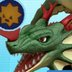

- 세대
- 궁극체
- 종족
 바이러스
바이러스- 속성
 땅
땅- 소비 메모리
- 20
- 장비 슬롯
- 2
스테이터스 (Lv.99)
HP24704위/98
SP12894위/98
ATK2779위/98
INT13384위/98
DEF22716위/98
SPD17878위/98
막대 길이는 등록된 디지몬 중 최고값 대비 비율이에요. 순위는 스테이터스가 등록된 디지몬끼리 비교해요.
필살기 1
디스트로이드 러시 땅 SP 20
적 1체물리위력 25 × 5회
디지몬 속성과 같음SS 보너스 +10%
적 1체에 땅속성 위력 25의 물리공격을 5회 한다. 크리티컬이 발생하기 쉽다.
SS(서포트스킬)
지룡
땅속성 스킬로 주는 대미지와 공격력이 10% 증가한다.
계승기 (레벨업 습득) 5
이 디지몬이 레벨업으로 배우는 스킬이에요. 배운 스킬은 진화·퇴화해도 계속 쓸 수 있어요.
| 습득 Lv | 스킬 | 속성 | SP |
|---|---|---|---|
| 20 | 선더 폴 II 적 전체에 전기속성 위력 45의 물리공격. | 7 | |
| 35 | 가드 브레이크 필드 적 전체의 방어력을 10% 내린다. | 20 | |
| 50 | 나노머신 브레이크 III 적 1체에 전기속성 위력 105의 물리공격. 명중률 95%. | 9 | |
| 65 | 선더 폴 III 적 전체에 전기속성 위력 75의 물리공격. | 10 | |
| 80 | 어스퀘이크 III 적 전체에 땅속성 위력 75의 물리공격. 명중률 95%. | 10 |
이 디지몬이 강한 상대
상대 종족(세로)과 속성(가로)별로 이 디지몬의 공격 필살기 중 가장 높은 배율이에요. 칸에 마우스를 올리면 계산 근거가 보여요.
×3 이상×2 이상보통×1 미만
| 상대 ↓ / → | |||||||||
|---|---|---|---|---|---|---|---|---|---|
| 백신 | ×0.55 | ×0.55 | ×0.55 | ×0.83 | ×0.55 | ×0.55 | ×0.55 | ×0.55 | ×0.55 |
| 데이터 | ×2.20 | ×2.20 | ×2.20 | ×3.30 | ×2.20 | ×2.20 | ×2.20 | ×2.20 | ×2.20 |
| 바이러스 | ×1.10 | ×1.10 | ×1.10 | ×1.65 | ×1.10 | ×1.10 | ×1.10 | ×1.10 | ×1.10 |
| 프리 | ×1.10 | ×1.10 | ×1.10 | ×1.65 | ×1.10 | ×1.10 | ×1.10 | ×1.10 | ×1.10 |
등록된 디지몬 중 ×2 이상으로 공격할 수 있는 상대 80마리
궁극체 같은 세대 24 · 다른 세대 상대는 도감에서 볼 수 있어요.
그랜드로코몬×3.30나사몬×3.30간쿠몬×2.20그리폰몬×2.20돌고라몬×2.20두프트몬×2.20두프트몬LM×2.20두프트몬NX×2.20듀나스몬×2.20디아나몬×2.20로제몬×2.20로제몬BM×2.20로터스몬×2.20메탈가루몬×2.20메탈시드라몬×2.20미라쥬가오가몬×2.20미라쥬가오가몬BM×2.20샤벨레오몬×2.20샤크라몬×2.20제스몬×2.20쿠즈하몬×2.20파일볼케몬×2.20프린스콩알몬×2.20플레시오몬×2.20
진화 전 디지몬 (퇴화 가능) 4

그라운드라몬
- 이 디지몬을 발견한 적이 있다.
트리케라몬
- 이 디지몬을 발견한 적이 있다.
메탈티라노몬
- 이 디지몬을 발견한 적이 있다.
돌그레몬
- 이 디지몬을 발견한 적이 있다.
진화 가능 디지몬 1
엑자몬
- 레벨 60 이상
- 최대 HP가 1650 필요
- 공격력이 150 필요
- 민첩이 150 필요
- 재능이 100 필요
- 우정이 100% 필요
- 우정 100%의 슬레이어드라몬이 동료에 있다
진화 트리 · 브레이크드라몬까지 오는 길 + 다음 진화
왼쪽부터 진화 순서예요. 브레이크드라몬 오른쪽(점선 칸)은 바로 다음 진화 1단계예요. 그 뒤가 궁금하면 그 디지몬을 눌러 따라가 보세요. 선은 출발하는 디지몬의 색을 따라가요. 디지몬을 한 번 누르면 거기서 브레이크드라몬까지 가는 경로만 남고, 한 번 더 누르면 그 디지몬 페이지로 이동해요. 회색 칸은 아직 정보가 없는 디지몬이에요.
유년기I
유년기II
성장기
성숙기
완전체
궁극체
초궁극체 ▸